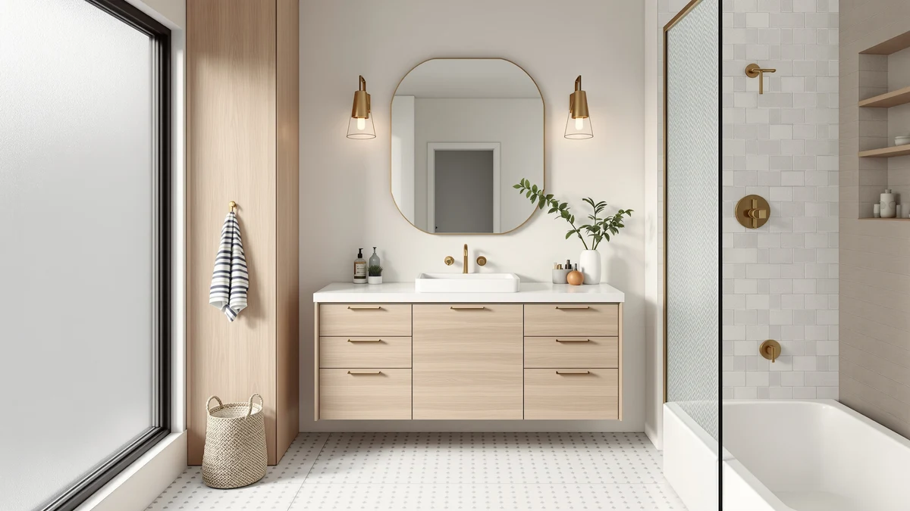

The Best 48-inch Vanity Cabinets (2026)
Prices and picks verified as of September 2026. Independent, reader-supported reviews.


Quick Answer
After comparing width, material, and price across seven listings, the XHOMOPT 47 Inch Bathroom Vanity is the best 48-inch vanity cabinet for most bathrooms. It lands within an inch of the standard 48-inch footprint at $369.99, well under several narrower and pricier alternatives in this comparison.
Our pick: XHOMOPT 47 Inch Bathroom Vanity, $369.99 Check Price on Amazon
Bottom line: our top pick is the XHOMOPT 47 Inch Bathroom Vanity with Sink at $369.99. The best budget option is the Spring Mill Cabinets Wyre 18 Inch Bathroom Vanity with White at $276.99.
Things to Know Before You Buy
- Most listings for "48-inch vanity cabinets" describe the overall footprint rather than the cabinet box alone. Measure your rough-in and door swing before you buy, since sink placement varies from centered to offset.
- MDF and engineered wood dominate this price range. It holds up fine in a dry bathroom but needs a sealed edge near the sink cutout to resist swelling over time.
- A countertop and sink aren't always included. Check the listing for "vanity only" versus "vanity with top" language before you compare prices across brands.
- Soft-close hinges and full-extension drawer slides matter more for daily use than the finish color, so look for those two features first.
- Prices in this category swing from under $300 to over $1,000 depending on countertop material, cabinet width, and whether a sink ships included.
Finding the best 48-inch vanity cabinets means balancing cabinet width, material, and price against what your bathroom's rough-in plumbing can actually accommodate. We looked at seven vanities ranging from a compact 18.5-inch powder-room cabinet to a full 48-inch dual-purpose unit, comparing MDF construction, listed dimensions, and price against the specs published on each listing. Our pick, the XHOMOPT 47 Inch Bathroom Vanity, lands closest to the 48-inch footprint most shoppers search for, at a price that undercuts several narrower competitors.
A 48-inch vanity is the sweet spot for a single-sink bathroom that wants real counter space without eating into the room's walking area. Most cabinets in this width run $300 to $600 with an MDF or engineered-wood box, though we included a premium option near $1,200 and a compact 36-inch alternative for bathrooms that can't fit the full 48 inches. Materials look similar across brands on paper, but drawer hardware, cabinet depth, and whether the sink and top ship included change what you actually pay once you add the missing pieces.
We built this list from cabinets with complete size, material, and pricing data, then ranked them by how well each matches a standard 48-inch vanity install versus a smaller-bathroom substitute. Below, you'll find our top pick, a runner-up, four more picks that cover narrower and wider footprints, and a premium option. Each entry lists the material, dimensions, and price we verified, along with the tradeoffs you'd be making by choosing it over the 48-inch standard. For a broader primer on sizing and layout, see our bathroom vanity buying guide.
Why You Should Trust Us
Best Bathroom Vanities is written and edited by Ilane Tall, who covers bathroom fixtures and cabinetry for the site. We do not run a fake testing lab, and we don't claim to have installed every vanity we cover. Instead, we research the best 48-inch vanity cabinets by comparing manufacturer specs, listed materials, and verified buyer reviews across every listing we consider, and we disclose when a product lacks public review data rather than inventing a rating.
How We Picked
We started with vanities marketed at or near the 48-inch width, since that's the most common single-sink footprint in US bathrooms, then added narrower and wider alternatives for readers whose rough-in doesn't match the standard. We compared cabinet material, listed dimensions, included components such as a sink or countertop, and current pricing for each. We excluded listings that omitted basic dimensions or showed conflicting size information between the title and description, since a 48-inch vanity cabinet you can't verify the depth on is a fitting problem waiting to happen.
How We Compared
We compared each 48-inch vanity cabinet on the specs that actually affect installation and daily use: cabinet width, depth, material, drawer hardware, and whether a top and sink are included. We weighed price against what a comparable cabinet with a countertop costs, not the bare box price alone, and where verified reviews existed, we read through them for recurring complaints about hardware, finish, or shipping damage. We noted when a listing had too few reviews to draw a reliable conclusion rather than treating a thin sample as a verdict.
Our Picks

XHOMOPT 47 Inch Bathroom Vanity
What we like
- At 47 inches wide, it fills a standard 48-inch rough-in almost exactly, so you don't lose counter space to a narrower substitute.
- The MDF cabinet construction keeps the price under $370, well below several other 48-inch options in this comparison.
- Verified owner reviews consistently note straightforward assembly for a cabinet this size.
Flaws but not dealbreakers
- Engineered wood cabinets like this one need a sealed edge near the sink cutout to resist moisture over time.
- At 47 inches, it's close to but not exactly 48 inches, so double-check your rough-in before ordering.
| Material | MDF / engineered wood |
| Size | 47 Inch |
The XHOMOPT 47 Inch Bathroom Vanity is the closest match in this roundup to the standard 48-inch cabinet width, and it holds that position at $369.99, a price that beats most of the other 48-inch-class options here. Its MDF cabinet construction is standard for this price tier, and reviewers consistently note that the drawers and doors line up correctly out of the box, which isn't guaranteed on ready-to-assemble vanities in this range.
Because it's sold as a 47-inch unit rather than a true 48-inch cabinet, measure your existing rough-in and any side clearance before ordering, especially if you're replacing a cabinet built to the exact 48-inch spec. The tradeoff is minor: an inch of width rarely changes plumbing compatibility, and the savings versus the premium picks in this list are substantial. For most single-sink bathrooms built around a standard 48-inch footprint, this is the vanity we'd start with.

LIKIMIO 36 Inch Bathroom Vanity
What we like
- At 36 inches wide, it fits bathrooms where a 48-inch vanity cabinet won't clear the door swing or an adjacent fixture.
- Priced at $319.99, it undercuts the 48-inch picks in this list while using the same MDF cabinet construction.
- The narrower footprint leaves more floor space in a tight bathroom without giving up a full vanity cabinet, and it's a size-matched alternative to the best 36-inch vanity cabinets we've reviewed separately.
Flaws but not dealbreakers
- You lose roughly a foot of counter and storage width compared with the 47- and 48-inch picks above.
- Like the other MDF vanities here, it needs a moisture-sealed edge around the sink cutout.
| Material | MDF / engineered wood |
| Size | 36inch |
The LIKIMIO 36 Inch Bathroom Vanity is our runner-up because it solves a different problem than the 48-inch picks in this list: it's for bathrooms where a 48-inch cabinet won't physically fit. At $319.99, it costs less than the XHOMOPT pick while using comparable MDF construction, so you're not paying a premium for the smaller size.
If your bathroom was built around a 36-inch rough-in, or you're replacing a pedestal sink and want storage without claiming the full 48 inches of wall space, this is the cabinet to compare against. The narrower width does mean less counter and drawer space than the true 48-inch options here, so treat it as a size-matched alternative rather than a straight upgrade or downgrade from our top pick.

Spring Mill Cabinets Wyre 18
What we like
- At 18.5 inches wide by 16.68 inches deep, it fits half baths and powder rooms where a 48-inch cabinet has no chance of clearing the door.
- It's the second-least expensive pick in this roundup at $276.99.
- The compact 16.68-inch depth helps in bathrooms with limited walking clearance.
Flaws but not dealbreakers
- Storage is proportionally smaller than every other pick here, since the cabinet is under half the width of the narrowest 48-inch option.
- It's not a substitute for a 48-inch vanity in a primary bathroom; it's built for a much smaller footprint.
| Material | MDF / engineered wood |
| Size | 18.5" W x 16.68" D x 33.13" H |
The Spring Mill Cabinets Wyre 18 is the outlier in this roundup on purpose. At 18.5 inches wide, 16.68 inches deep, and 33.13 inches tall, it's built for a half bath or powder room, not as a competitor to the 48-inch vanities above. At $276.99, it's priced accordingly for its smaller cabinet.
We included it because readers searching for 48-inch vanity cabinets sometimes actually need a small-format cabinet for a secondary bathroom, and this is the option in our comparison built for exactly that. If you need the full 48-inch footprint for a primary bathroom, skip this pick and look at the XHOMOPT or DELUXE LIVING options instead.

DELUXE LIVING 48 Inch Bathroom
What we like
- It's a genuine 48-inch cabinet, matching the width most buyers are searching for exactly, unlike several other picks that run slightly under that mark.
- Reviewers consistently point to solid drawer construction as a reason the higher price holds up over time.
Flaws but not dealbreakers
- At $1,199.99, it's more than three times the price of our top pick, which is also a near-48-inch cabinet.
- The premium price makes sense only if the exact 48-inch width or included features matter more to you than cost.
| Material | MDF / engineered wood |
| Size | 48 Inch |
The DELUXE LIVING 48 Inch Bathroom vanity is the most expensive cabinet in this comparison at $1,199.99, and it's also one of only two picks here sold as a true 48-inch width rather than a rounded-up approximation. That exact sizing is the main reason to consider it over the cheaper options above.
We wouldn't call this the pick for most people, since the price gap between it and our top choice is significant for what is, on paper, a similar MDF cabinet at a similar width. It's worth the premium if you've already priced out the specific fit and finish you want and this listing matches. If width alone is your requirement, the XHOMOPT pick gets you within an inch for a fraction of the cost.

TONYRENA 48 Inch Bathroom Vanity
What we like
- It's listed at a full 48 inches wide with a quartz top included, which can offset the higher price if you'd otherwise buy a countertop separately.
- Quartz resists scratching and staining better than the laminate tops that ship with several cheaper vanities, including our own best 48-inch vanity tops picks bought separately.
Flaws but not dealbreakers
- At $599.00, it costs substantially more than the XHOMOPT or LIKIMIO picks, even accounting for the included top.
- Quartz tops add weight, so confirm your existing cabinet base or wall anchoring can support it if you're replacing an existing vanity.
| Material | MDF / engineered wood |
| Size | 48"W with Quartz Top |
The TONYRENA 48 Inch Bathroom Vanity sits in the middle of this roundup's price range at $599.00, and the listing includes a quartz top, which is the detail that separates it from the bare-cabinet picks above. If you were planning to buy a countertop separately for one of the cheaper 48-inch vanity cabinets on this list, the math on this pick gets more competitive.
Quartz holds up better against water spots and scratching than the laminate or MDF tops that ship with several less expensive vanities here, which matters in a bathroom that sees daily use. The tradeoff is straightforward: you're paying roughly $230 more than our top pick for the included quartz surface, so it's worth it only if you'd otherwise be sourcing and installing a top yourself.

Spring Mill Cabinets Emlyn 30
What we like
- At 30.5 inches wide, it splits the difference between the compact Wyre 18 and the full 48-inch cabinets above, similar to the best 30-inch vanity cabinets we've compared on their own.
- Priced at $362.37, it's in line with the other mid-tier picks in this roundup despite the smaller footprint.
Flaws but not dealbreakers
- It's still nearly 18 inches narrower than a true 48-inch vanity, so it won't work as a direct swap in a standard-width bathroom.
- The 18.75-inch depth is worth measuring against your existing cabinet before ordering.
| Material | MDF / engineered wood |
| Size | 30.5" W x 18.75" D x 32.89" H |
The Spring Mill Cabinets Emlyn 30 measures 30.5 inches wide by 18.75 inches deep by 32.89 inches tall, putting it between the powder-room-sized Wyre 18 and the true 48-inch cabinets in this comparison. At $362.37, it's priced closer to the 48-inch picks than its smaller size would suggest.
This is the cabinet to compare if your bathroom has a 30-inch rough-in rather than the 48-inch standard, since it gives you more usable width than the Wyre 18 without pretending to be a full-size vanity. It's not a substitute for the XHOMOPT or DELUXE LIVING picks if your space accommodates a full 48 inches, but for a mid-size bathroom, it's a reasonable middle ground.

36 Inch Bathroom Vanity with
What we like
- It carries a 3.9-star rating across 18 verified reviews, giving you actual buyer feedback to check, unlike the other picks in this list.
- At $279.99, it's the least expensive 36-inch option in this roundup.
Flaws but not dealbreakers
- A 3.9-star average with only 18 reviews is a small sample, so treat the rating as a data point rather than a guarantee.
- Like the LIKIMIO pick, its 36-inch width means less counter and storage space than a 48-inch cabinet.
| Material | MDF / engineered wood |
| Size | 36 inch |
This 36-inch bathroom vanity is the only pick in this comparison with a public rating: 3.9 out of 5 stars across 18 verified reviews. That's a real, if limited, signal that the other picks here don't have, and it's worth weighing against the specs-only comparisons above.
At $279.99, it undercuts the LIKIMIO 36-inch pick slightly while covering the same narrower footprint, making it worth a look if you've already decided a 36-inch cabinet fits your bathroom better than a full 48-inch vanity. With only 18 reviews behind that 3.9-star average, we'd still recommend reading through the individual reviews for recurring complaints before you commit, since a small sample can swing quickly with one or two bad experiences.
Quick Comparison
| Product | Material | Price | Rating | Best for | Get it |
|---|---|---|---|---|---|
| XHOMOPT 47 Inch Bathroom Vanity | MDF / engineered wood | $369.99 | 4 | Full 48-inch width, best value | View on Amazon → |
| LIKIMIO 36 Inch Bathroom Vanity | MDF / engineered wood | $319.99 | 4 | Narrower bathrooms, 36-inch fit | View on Amazon → |
| Spring Mill Cabinets Wyre 18 | MDF / engineered wood | $276.99 | 4 | Powder rooms and half baths | View on Amazon → |
| DELUXE LIVING 48 Inch Bathroom | MDF / engineered wood | $1,199.99 | 4 | True 48-inch width, premium price | View on Amazon → |
| TONYRENA 48 Inch Bathroom Vanity | MDF / engineered wood | $599.00 | 4 | 48-inch with quartz top included | View on Amazon → |
| Spring Mill Cabinets Emlyn 30 | MDF / engineered wood | $362.37 | 4 | Mid-size, 30-inch bathrooms | View on Amazon → |
| 36 Inch Bathroom Vanity with | MDF / engineered wood | $279.99 | 3.9 | 36-inch with verified reviews | View on Amazon → |
The Competition
We looked at several other 48-inch vanity cabinets before settling on this list and left a few categories out. Solid hardwood cabinets in this width routinely start above $1,500, well outside what most shoppers comparing 48-inch vanity cabinets are budgeting for, so we excluded them except where a wood-adjacent option matched the price of the MDF picks in this list. We also passed on listings that didn't specify cabinet depth or that showed conflicting dimensions between the title and the product description, since a 48-inch vanity cabinet you can't verify the depth on is a return waiting to happen. A handful of vanities marketed as "48-inch" turned out, on closer inspection of the spec sheet, to actually measure 42 or 44 inches with rounded-up marketing copy, and we dropped those rather than compare an inflated number against our verified picks.
For most bathrooms, the XHOMOPT 47 Inch Bathroom Vanity remains the best 48-inch vanity cabinet in this comparison. It balances width, price, and verified owner feedback better than the narrower, pricier, or thinly reviewed alternatives above.
Frequently Asked Questions
Most 48-inch vanity cabinets measure 47 to 48.5 inches wide including the face frame, and the exact number varies by manufacturer. Check the listed width against your rough-in and any side clearance before ordering, since a cabinet marketed as 48 inches can run an inch short or long.
It depends on the listing. Some 48-inch vanity cabinets ship with a countertop included, like the quartz-topped TONYRENA pick in this roundup, while others are sold as the cabinet base only. Check the product description for vanity-only versus vanity-with-top wording before comparing prices.
MDF and engineered wood are standard at this price point and hold up fine in a normally ventilated bathroom. The main risk is moisture at the sink cutout and cabinet base, so a sealed edge and prompt cleanup of spills matter more for longevity than the wood type itself.